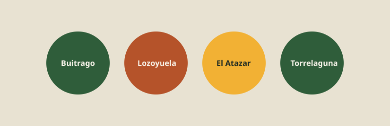

Huerto Los Álamos
Finca familiar de 6 hectáreas con riego por goteo y certificación ecológica en trámite.
Cuatro explotaciones y obradores de la Sierra Norte de Madrid unidos desde 2018 para vender directamente sin intermediarios.

Finca familiar de 6 hectáreas con riego por goteo y certificación ecológica en trámite.
Rebaño de 120 cabras y 80 ovejas.
Cuarenta colmenas trashumantes entre el romero de primavera y el brezo de verano.
Horno de leña con masa madre propia y harinas de molino local.